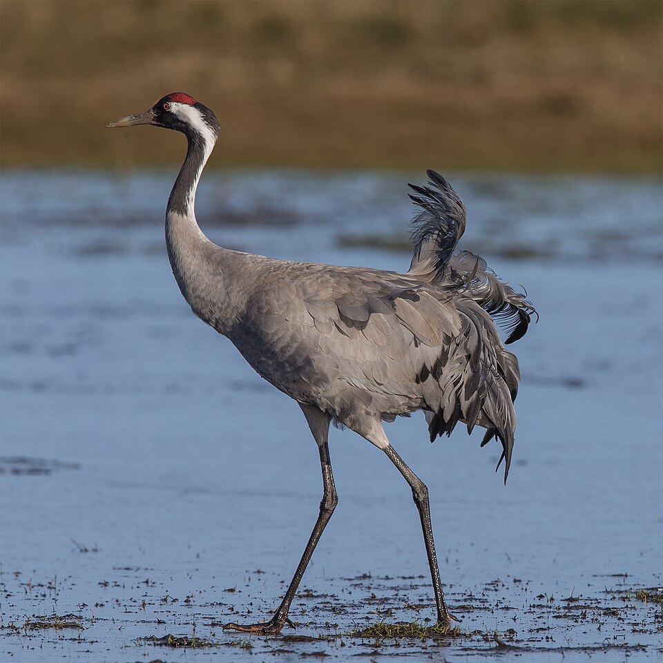

VogelFinder
🔍 Suche:
Finden
Startseite
>
Aktuelle Seite
Navigation
Alle Vögel
Vogelkarte
Blog
Siehe auch
Spenden
Blog
Hier sind unsere Blogartikel und News.
Herbzug der kraniche Hat begonnen

Zehntausende Kraniche sammeln sich derzeit in den Rastgebieten im Norden und Osten Deutschlands...
Heimische Vielfalt: Wer flattert durch unsere Gärten?
Vom farbenfrohen Buchfinken über die quirlige Blaumeise bis hin zum scheuen Buntspecht: Deutsche Gärten bieten Lebensraum für weit über 30 gängige Vogelarten. Ein neuer Online-Leitfaden zeigt, mit welchem Futter und welchen Nistkästen man die Artenvielfalt vor der eigenen Haustür gezielt unterstützen kann...
Großes Update für „VogelFinder“: Neue KI-Erkennung in entwicklung
Das Portal „VogelFinder“ blickt in die Zukunft: Das Entwicklerteam hat offiziell mit der Arbeit an einer völlig neuen, intelligenten Bild- und Audio-Erkennung begonnen. Ziel ist es, dass Nutzer heimische Vögel bald per schnellem Kameraschuss identifizieren können. Die Entwickler zeigen sich optimistisch – schließlich kann es ja nicht so schwer sein, eine Technologie zu perfektionieren, an der die klügsten Köpfe der Menschheit seit schlappen sechzig Jahren forschen. Schon in wenigen Monaten sollen erste Testläufe mit besonders geduldigen Spatzen starten...